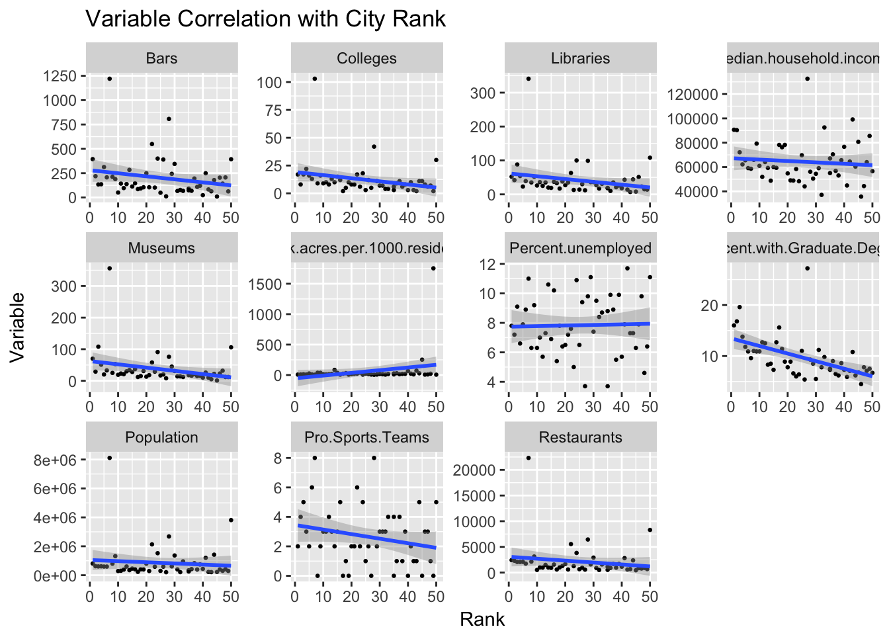

suppressPackageStartupMessages(library(ggplot2))
suppressPackageStartupMessages(library(tidyr))## Warning: package 'tidyr' was built under R version 3.4.2suppressPackageStartupMessages(library(dplyr))## Warning: package 'dplyr' was built under R version 3.4.2suppressPackageStartupMessages(library(googleVis))## Creating a generic function for 'toJSON' from package 'jsonlite' in package 'googleVis'bcities=gudatavizfa17::bcitiesfacetchart=gather(bcities, "Variable", "Values", 1,3:13)## Warning: attributes are not identical across measure variables;
## they will be droppedfacetchart=facetchart[facetchart$Variable!="City",]
facetchart$Values=as.numeric(facetchart$Values)ggplot(facetchart,aes(x=Rank, y=Values)) + geom_point(size=.5)+facet_wrap(~Variable, scales = "free") + geom_smooth(method="lm") + labs(list(title= "Variable Correlation with City Rank", x="Rank", y="Variable"))
bcities$latlong=paste(bcities$lat,bcities$lon,sep=":")Geo=gvisGeoChart(bcities, "latlong", "Rank", options = list(region="US", dataMode= "markers",resolution= "provinces", width= 800, height=800, sizeAxis = '{minValue: 1, maxSize: 3}'))
Geo
bcities$Statecity= c("California", "Alaska", "Nebraska", "Missouri", "Ohio", "Virginia","Arizona", "Arizona", "Nevada", "Texas", "Virginia", "North Carolina", "Oklahoma", "Indiana", "Colorado", "Florida", "Nebraska", "California", "New York", "California", "Texas", "Maryland", "Illinois", "Washington", "Wisconsin", "Kentucky", "Pennsylvania", "Oklahoma", "Texas", "Ohio", "Ohio", "Hawaii", "North Carolina", "Wisconsin", "Georgia", "Kansas", "Lousiana", "Tennessee", "Minnesota", "Pennsylvania", "Minnesota", "California", "Texas", "New York", "Colorado", "Oregon", "Massachusetts", "District of Columbia", "Washington", "California")Countstate = bcities %>% group_by(Statecity) %>% summarise(Count = n())
Countstate$Count <- as.numeric(Countstate$Count)
Countstate$Statecity <- as.factor(Countstate$Statecity)
str(Countstate)## Classes 'tbl_df', 'tbl' and 'data.frame': 30 obs. of 2 variables:
## $ Statecity: Factor w/ 30 levels "Alaska","Arizona",..: 1 2 3 4 5 6 7 8 9 10 ...
## $ Count : num 1 2 5 2 1 1 1 1 1 1 ...States <- gvisGeoChart(Countstate,"Statecity", "Count", options=list(region="US", displayMode="regions", resolution="provinces",
width=800, height=800))
States